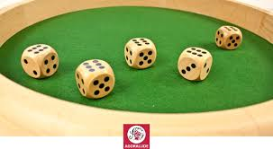

Bienvenue sur le site
Notre site web a été créé par des étudiants de l’IUT Robert Schuman. Ce site présente le jeu de Yam's.
Le projet a été réalisé par deux personnes : une pour la programmation et une pour l'interface web.
Le Yahtzee (aussi orthographié Yatzee, Yatzy) ou le Yam's est un jeu de société traditionnel basé sur le hasard raisonné.
Ce projet a été codé par deux étudiants de l’IUT Robert Schuman :
Programmation/P11 : Jules
Web/W11 : Le Thanh Long
Objectif de la SAE
L'objectif de cette SAE est de développer une application en C# (mode console) permettant à deux joueurs de jouer une partie de Yam's sur un même ordinateur. Un récapitulatif de la partie sera ensuite affiché dans un navigateur web en utilisant HTML, CSS et JavaScript.